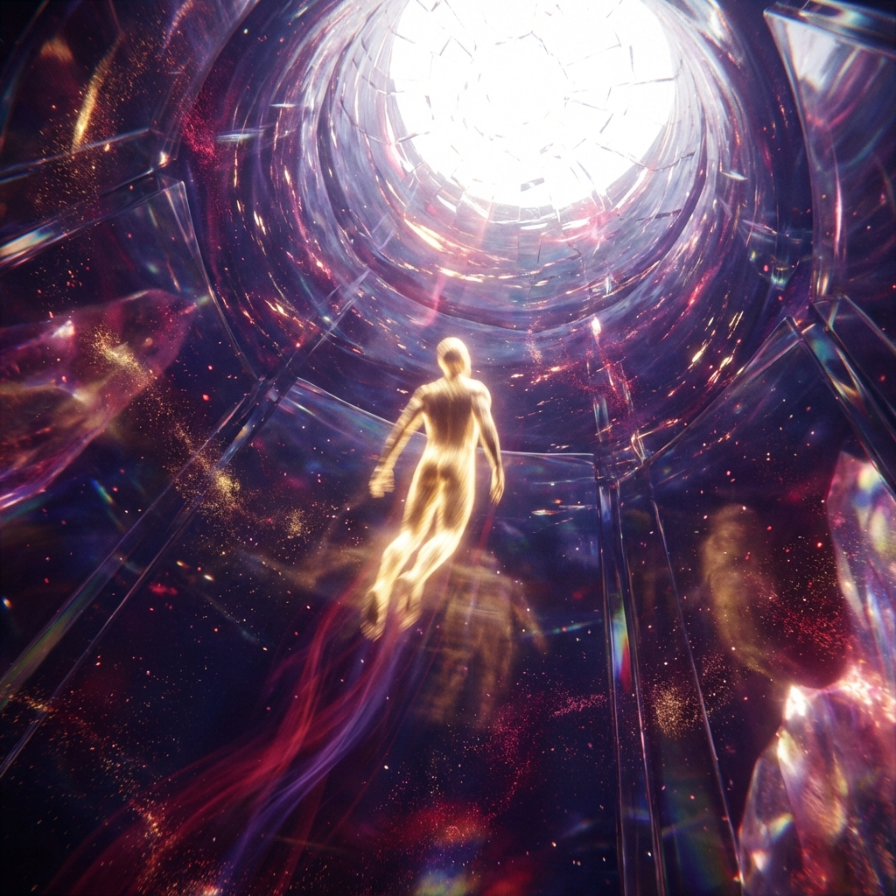

סעיף I — מעגל התשובה
"מבורכים הם אלה שימיהם לא טעמו רע. שכן כאשר בית פעם אחת נזעזע משמיים, שם הקללה לא עוברת לעולם, עוברת מחיים לחיים." — סופוקלס
גלגול השורשים
על פי רבי יצחק לוריא (האר"י), 600,000 נשמות השורש של האנושות שבות לכל אורך ההיסטוריה להינפות ולהתעדן. דור המבולחזר במגדל בבל, בזמן חורבן בית ראשון, ושוב בשואה. כל חיים הם הזדמנות חדשה לתקן את ה"חסרונות" של העבר.
איוב ותרח
איוב היה גלגולו של תרח, אביו של אברהם. סבלו לא היה אקראי בלבד; זה היה תהליך טיהור.
- הטעות: איוב הביא עולות (רוחניות) אך הזניח את שלמים (שמאכילים את העניים).
- הלקח: להיות דתי אינו זהה להיות צדיק. צדקות אמיתית דורשת חסד פעיל כלפי הפגיעים.
בורות הבחירה החופשית
אם היינו יודעים את כל העובדות ואת ההשלכות המדויקות של מעשינו, לא הייתה לנו בחירה חופשית — היינו כחומר בידי היוצר. כדי לחשוף את אופינו האמיתי, אלוהים מסתיר את הפעולות הפנימיות של היקום. עלינו להחליט כיצד לפעול על סמך אמון ויושרה פנימית, ולא רק ודאות של שכר.
כאוס והסתברות
דברים גדולים בחיינו קורים לעיתים קרובות בגלל וריאציות קטנות מאוד. זהו עולם הכאוס. אך כאשר אנו משלבים אירועים אלו, הם מתאזנים לפונקציה בינומית — רחוק יותר מאור המקור האינטנסיבי, אך קרוב יותר ל"כלים" שיכולים להחזיק את שלום ההבנה.
ההיסט האדום של הרוח

לפני כל רמה חדשה של חוכמה, ישנה תקופה של חושך או "אור לאחור". כאשר הנשמה עולה, נדמה שפני האלוהים מסתובבים מהצד, ומטילים צל של היסט אדום. טוב גדול לעיתים קרובות מגיע לבוש בדינים; יש לסבול את החושך כדי להגיע לגילוי הגבוה יותר.